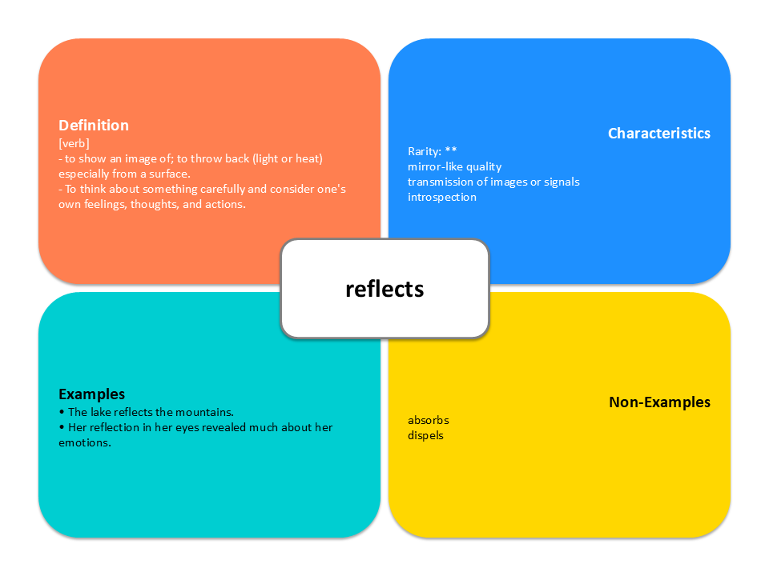
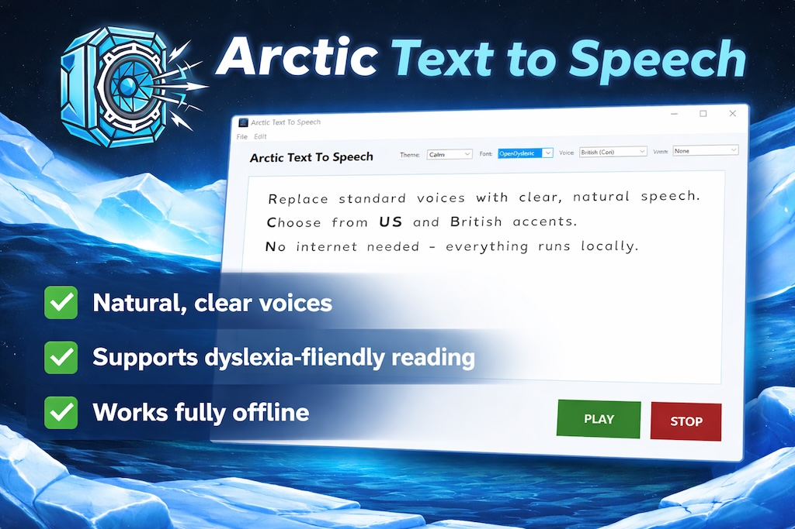

Concept Grid provides the visual scaffolding that dyslexic students need to bypass text barriers and focus on conceptual understanding.

Organizing words into quadrants reduces cognitive load and visual stress, making it easier to process complex definitions.
Our standard grid layout provides a reassuring, consistent framework that helps students with sequencing difficulties.
Text-to-Speech allows students to hear definitions and examples read aloud, which is critical for phonological processing and reducing fatigue.
Experience the challenges of reading first-hand. Our interactive experience allows you to toggle letter confusion, word mix-ups, and uneven spacing to better understand the dyslexic experience.
Launch Experience
Download our custom-built Text to Speech engine designed to help learners listen to any digital text offline. It provides a clean, distraction-free way to reinforce phonological processing and reduce reading fatigue.
Available for download on the Microsoft Store.